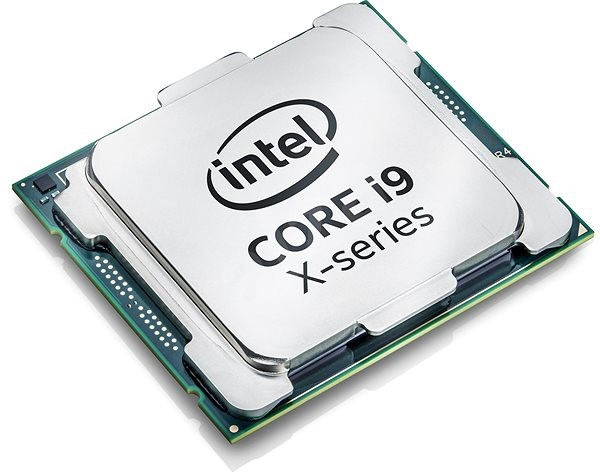

A processzor, azaz CPU(Central Processing Unit), a számítógép "agya". E komponens álal dolgozza fel a kéréseket és a parancsokat a számítógép.
A képen egy Intel Core I9-es processzor látható.
A processzort a '70-es években találták fel, az integrált áramköröknek köszöhetően. A processzort amiatt fejlesztették ki, ugyanis a korai számítógépeket mindig újra kellett kötni, ha más feladatokat akartak végezni.
Az én processzorom egy I5-6500-as processzor.